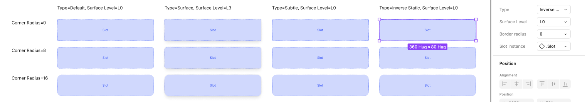
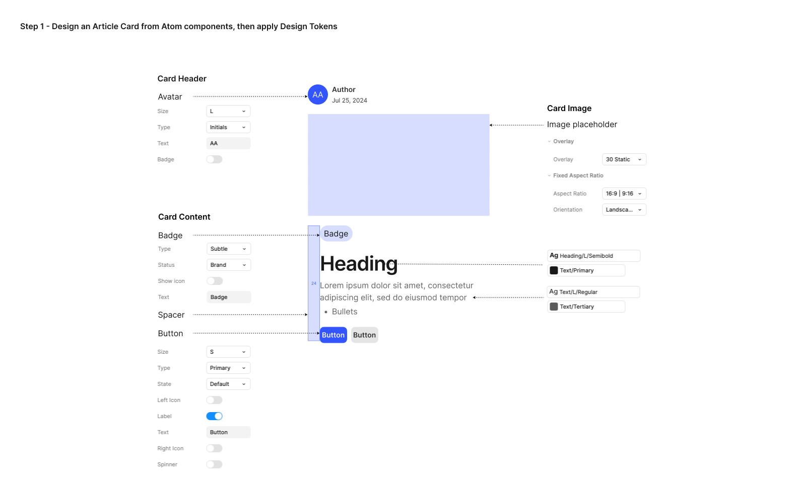
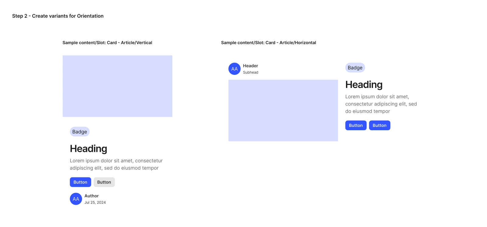
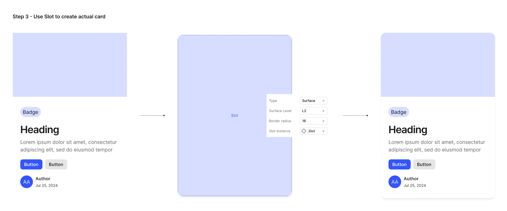
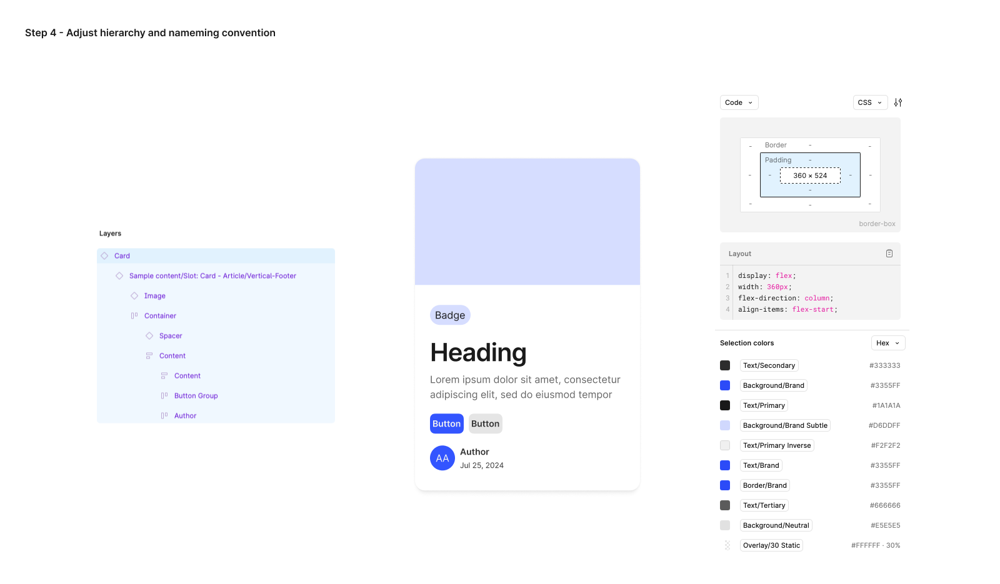
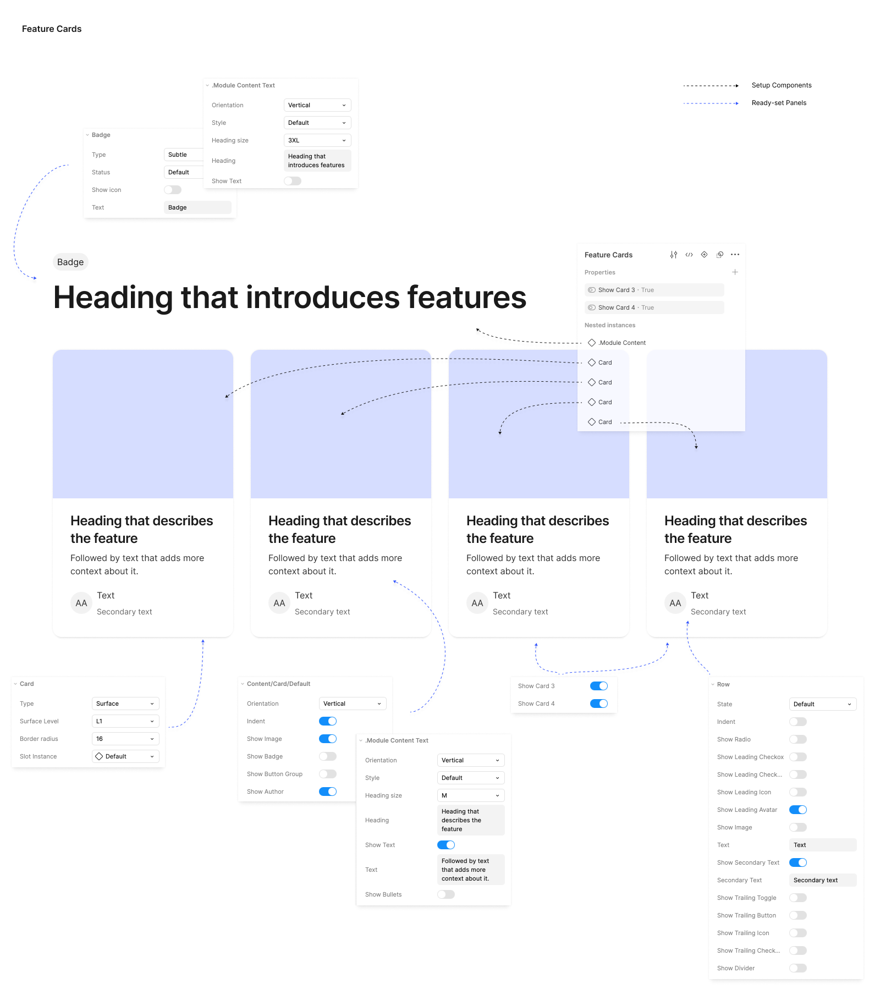
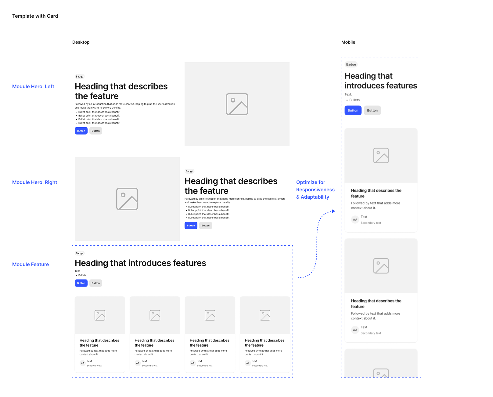

How I Constructed and Managed a Design System for a Successful Project
Project Name: Design System
Platform: Mobile and Web

Building a Design System is a top crucial step when starting working on any design project. As a UX Designer working on multiple projects for years, I understand the importance of creating a fine Design System so that the designer myself as well as the team I’m woking with can easily and seamlessly cooperate.
Research
What A Strong Design System looks like
This is the first question I ask myself when starting to build a design system: How do I create something that’s truly effective? I’ve learned that a strong design system is not merely a collection of design elements—it’s a strategic asset that drives efficiency, fosters collaboration, and ultimately results in better products and user experiences.
To find a methodology for crafting effective interface design systems, I explored various sources of inspiration. From academic insights, such as those from NNG and Interaction Design, to real-life practical design files like M3 Design and Polaris, I found a wealth of knowledge. Additionally, I turned to numerous YouTube videos and podcasts from experienced designers. Through all of this, I discovered Atomic Design, which provided the answer to the question I had been searching for.
Atomic Design
Following bradfrost.com, the design system building based on Atomic Design follows the theory: atomic elements combine together to form molecules, these molecules can combine further to form relatively complex organisms.
Five distinct stages of Atomic Design:
- Atoms - Atoms are UI elements that can’t be broken down any further and serve as the elemental building blocks of an interface.
- Molecules - Molecules are collections of atoms that form relatively simple UI components.
- Organisms - Organisms are relatively complex components that form discrete sections of an interface.
- Templates - Templates place components within a layout and demonstrate the design’s underlying content structure.
- Pages - Pages apply real content to templates and articulate variations to demonstrate the final UI and test the resilience of the design system.
I believe this approach is essential for building an effective design system. Establishing a strong foundation ensures a well-structured system, which ultimately provides significant benefits and supports long-term success.
Working process
Pt.1 | Create Atoms - Design Tokens + Building Blocks
Design tokens are the single source of truth for design decisions. These tokens form the foundation of more complex components and can be adapted to ensure consistency across the designs.
#1 - Create Design Tokens categories
- Color - Define a color palette as design base (Primitive), and create Semantic mappings for specific contexts.
- Typography - Define font-related properties like font family, sizes, weights, line heights, and letter spacing as tokens.
- Spacing - Define consistent spacing values for padding, margins, and gaps.
- Breakpoints - Define breakpoints for different screen sizes that help maintain consistency across various screen sizes.
- Radii - Define border-radius values for rounded corners.
- Shadow - Define consistent shadow values for elevation and depth.
Also, ensure the design system is adaptable to different themes, such as light or dark modes, without needing to rebuild components from scratch.
#2 - Assign semantic names to design tokens to create a system that is easier to understand and work with. This abstraction layer simplifies maintenance, allowing me to update a token’s value in one place, ensuring that the change is automatically applied across all my designs.
#3 - Create Building Blocks, the fundamental UI elements that form the foundation of the design system. These components are crafted to be simple, reusable, and highly flexible, allowing me to seamlessly combine them into more complex components later such as molecules, organisms, and pages.
Below is an example of the smallest atom I created for a card component, called SLOTS—placeholders for dynamic content within the card.
Using card slots in product design enables flexible content placement without modifying the underlying structure. To ensure adaptability across different scenarios and meet various aesthetic needs, I design these slots in multiple types and styles. Once established, utilizing a slot becomes simple—I can easily select the desired option from the panel, which contains all predefined attributes.
Pt.2 | Create Molecules - Component Library
While researching, I learned that creating a molecule-level component library following the Atomic Design principle, requires careful planning and execution to ensure the components are reusable, consistent, and scalable. Here are some key factors I focused on:
Reusablility
Molecules should be flexible enough to work in different contexts
- Use components for Atoms when building molecules.
- Design molecules with a clear structure that can handle multi-purpose or variants.
Consistency
Molecules should be predictable and uniform structure across the design system
- Molecules use shared design tokens such as colors, typography, spacing, and effects.
- Ensures that all instances of the molecule look and function similarly, maintaining a cohesive design.
Flexibility
Molecules should be adaptable to different contexts and content variations
- The molecule accommodates varying content types to fit multiple scenarios.
- The molecule includes optional elements that can be included or excluded as needed.
Code-compatibility
Molecules should align closely with development requirements
- Molecules should follow a standardized naming convention to avoid confusion for devs.
- In term of elements structure and hierarchy, design components should closely mimic the way they will be implemented in code.
Continuing with the Card component example, here's how I leverage atom components to create multiple variations of the card design.



Pt.3 | Create Organisms - Modules
After completing Atoms and Molecules, my next step is creating Organisms by combining Molecules and Atoms altogether. There are several questions I need to answer in order to create an effective module, regarding:
Purpose of Each Organism
What is its primary function? Where is it used in the project? to ensure clear functionality. Each Organism should have a specific role within the UI.
Component Structure
What are its key components? Less is more, so Reusability is key here. It needs to use the existing Atoms and Molecules rather than creating new components, and must ensure everything remains consistent, and scalable.
Flexible and Modular Organisms
Does it have multiple states or variations? in order to adapt to different usecases, or/and, different screen sizes to meet the responsive behavior.
Below is the Feature Cards design created by the Atoms and Molecules in the previous steps.
As seen above, the Feature module is composed of multiple molecules, such as the Header and Cards. The Card itself is further broken down into smaller parts, including the Background, Image, and Content, with the Content containing elements like Module Content Text and Author. Each modular component is designed with essential properties and variables, ensuring optimization and flexibility. Once this process is complete, the module becomes highly adaptable, allowing it to be reused across various scenarios effortlessly.
Pt.4 | Create Templates
Templates are page-level objects that place modules into a layout and articulate the design's underlying content structure. When incorporating Modules into a Template, the goal is to maintain consistency, scalability, and flexibility while ensuring the layout is both functional and visulaly cohesive.
To build on our previous example, we can take the card organism and apply it to a homepage template.
Each section on the template is designed for dynamic updates. While the underlying templates remain the same, the user interface adapts to reflect the evolving nature of the content. This flexibility ensures that a single template can serve multiple purposes without compromising consistency.
Additionally, the template design was efficiently created for both desktop and mobile versions, including Android and iOS. This was made possible by the initial setup of variables, allowing seamless adaptation across different screens and operating systems.
Pt.5 - Create Page
Pages are specific instances of templates that show what a UI looks like with real representative content in place.
Building on my previous example, I can take the template and pour representative text, images, and media into the template to show real content in action. When I pour real representative content into homepage template, I'm able to see how all those underlying design patterns hold up.

Results
- Improved Consistency Across the Product
By breaking down UI elements into atoms, molecules, and organisms, the design system ensures:
- A unified visual language across different pages and features.
- Fewer inconsistencies in spacing, typography, and color usage.
- A single source of truth, reducing discrepancies between design and development.
- Increased Design and Development Efficiency
- Designers can quickly assemble new screens using pre-built components.
- Developers have reusable code components, reducing repetitive work.
- Faster prototyping and quicker iterations when testing new features.
Takeaways
A well-designed system is like constructing a well-engineered building: the foundation supports the weight, the structure defines the form, and the finishing touches bring it to life. Each part must be precise, integrated, and built for efficiency. By applying atomic design, I’ve created a foundation that ensures consistency, scalability, and seamless collaboration. A strong design system isn’t just a collection of components; it’s a source of truth that empowers teams, accelerates development, and enhances the user experience. True success lies not only in how it looks but in how effortlessly it enables teams to create, iterate, and innovate.